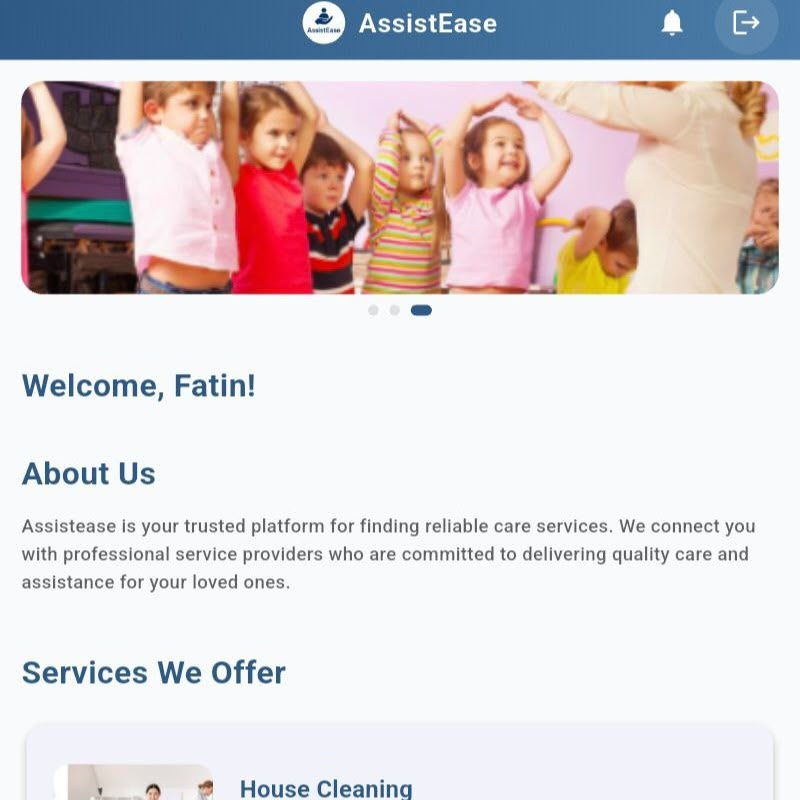
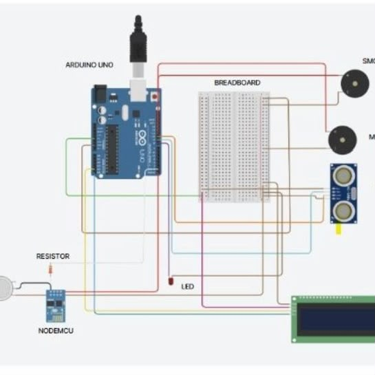

Bachelor’s Degree
Bachelor of Information Systems (Hons.) Information Systems Engineering
Universiti Teknologi MARA (UiTM), Kampus Jasin
October 2022 – February 2026
Hi, I'm
IT & Digital Media Executive
Information Systems Engineering graduate with hands-on experience in software development, web and mobile application development, and digital technologies. Skilled in Java, HTML, CSS, JavaScript, MySQL, Flutter, Dart and Firebase. I enjoy developing practical digital solutions, exploring new technologies, solving technical problems and creating user-friendly digital experiences.
Academic background
Bachelor’s Degree
Universiti Teknologi MARA (UiTM), Kampus Jasin
October 2022 – February 2026
Recognition for the AssistEase final-year project report.
Achieved during Semesters 5 and 6.
My professional journey
Software Engineer Apprentice
April 2026 – August 2026
Quality Assurance Intern
September 2025 – March 2026
Media and Marketing Assistant
June 2024 – August 2024
Selected university work

Mobile Development
Web Development

Internet of Things
Let’s connect
I am open to IT & Digital Media Executive opportunities and would be happy to discuss how I can contribute to your team.
fatimazahrarosdi@gmail.com